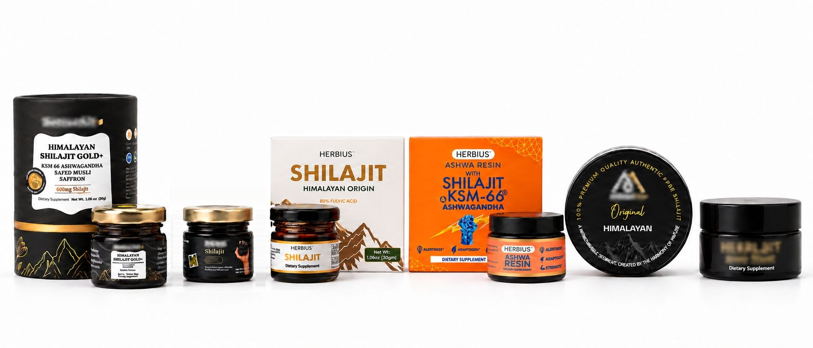
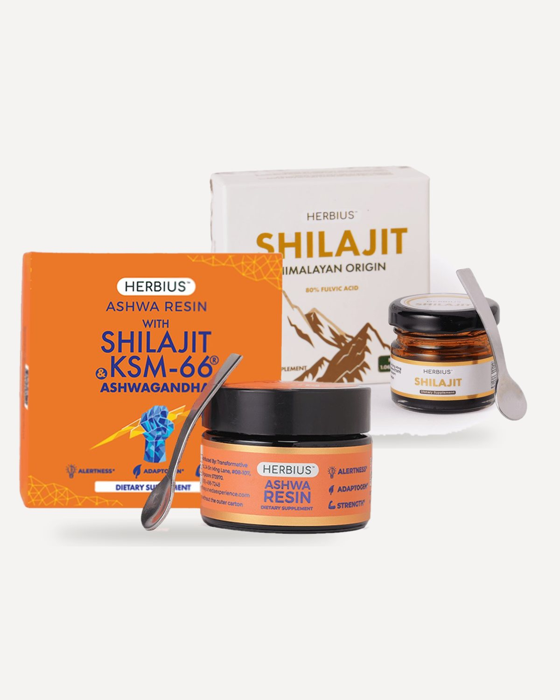

A new product line for a skincare brand.
The Ayurveda Experience (TAE) is a global house of brands that has sold Ayurvedic skincare for over 12 years, mostly to women over 50. Supplements were still new ground: TAE had sold a few before, but closed them when their back-end cohort revenue fell short.
Herbius had to earn trust from scratch. Ashwa Resin blends purified Himalayan Shilajit with KSM-66 ashwagandha, honey and real vanilla, so it tastes good enough to take every day. Herbius Shilajit is the pure resin.
Every Shilajit on the shelf was talking to the same man.
Shilajit is sold for muscle, testosterone and stamina, in black jars with gold labels. Its traditional benefits are not gendered, and TAE's customers are women over 40 who already trust the brand with their skin. Nobody was speaking to them.
Black and gold packaging, gym and performance claims, one buyer in mind.
The same women going through perimenopause and menopause, already buying Ayurveda from TAE.
All three drop with the hormonal shift, and each usual fix comes with a catch.
A skincare brand had to earn trust for a supplement: Ayurvedic roots, third-party lab tests, a certificate in every pack.


A jar that doesn't look like the shelf.
The category is black and gold. We went warm instead: a sunlit orange carton for Ashwa Resin, cream and mountain brown for the pure Shilajit, so a woman scrolling past would never read it as a gym product.
We followed both cartons from dieline to press check.



Same jar, five angles. Libido won.
We wrote to one woman at a time: on her third coffee by 11am, awake at 2am, with creaky knees, or no longer wanting sex. Each angle got its own ads in Italian, Dutch and English. Libido pulled hardest, so from July most of our effort went there.


| Month | Libido | Other angles |
|---|---|---|
| May | 4 | 9 |
| June | 7 | 5 |
| July | 35 | 3 |
| August | 43 | 30 |
| September | 61 | 15 |
| October (to the 13th) | 12 | 1 |
Counted from the public Meta Ad Library: 225 Herbius creatives, May to 13 October 2026, each sorted by its headline. Libido grows from 4 creatives to 61 a month.
What the libido angle did against the others - for example ROAS, CPA or conversion rate by angle.
From embarrassed to checkout.
The libido page is long on purpose. Each section answers the next thing she is thinking, in the order she would think it. This is the US page as it runs today; the notes break down the psychology beat by beat.


"You don't have to feel embarrassed about wanting a fulfilling sex life (at whatever age you are)." The headline removes the reason to leave before naming the problem.
84% of women want an active sex life later in life, and 1 in 4 menopausal women make excuses to avoid it. She is part of a majority, not an exception.
Physical, neurological and emotional changes, each explained in plain words. The blame moves from her to biology.
Comments in her own words, names blurred: "like someone flicked a switch." She sees herself on the page before anything is sold.
Estrogen creams, pills and HRT each get a fair hearing and a catch. Then the missing piece: testosterone.
The Ayurvedic remedy arrives, and a myth and truth card takes the category's biggest objection head on.
Why cheap Shilajit is a risk, three rounds of third-party testing, a certificate in every pack, the KSM-66 study and a comparison table.
Three bundles anchored on the 90-day supply, a free ebook with every pack, a 30-day guarantee, then FAQs for the last doubts: "Will it make me man-like?"
One page, four markets.
Every ad and page had to exist in each market's language, and none of it was translated word for word: the UK page says "Intimate Life" where the US says "Sex Life", because the same line reads differently in each market.
 Italian"Da zero desiderio"
Italian"Da zero desiderio"
 Dutch"Van nul verlangen"
English"From zero desire"
Dutch"Van nul verlangen"
English"From zero desire"
 United States"Sex Life"
United States"Sex Life"
 United Kingdom"Intimate Life"
United Kingdom"Intimate Life"
 Italy"Vita Intima Appagante"
Italy"Vita Intima Appagante"
 Netherlands"Intiem Leven"
Netherlands"Intiem Leven"
Five people, 225 ads. So I built a system.
Five people can't hand-make every ad and page in three languages. I built AI skills the team used every day, and moved our pages off page builders onto coded HTML, which loads faster and translates in under an hour.
It ran in parallel with TAE Ad Studio, the ad tool I was building at the same time.
Research
An ebook for every angle.
Every pack came with a free ebook written for the angle that brought the buyer in, so the promise in the ad carried on after checkout. Each one was translated with its page.


Everything else a launch needs.
One, two or three jars, anchored on the 90-day supply at 15% off.
Upsells and cross-sells around the checkout.add detail
Flows planned and built for each market.confirm
A daily ritual turned into a repeat order.confirm
Listings I designed for both marketplaces.
The copywriters ran the outreach; I edited the raw footage creators sent back.